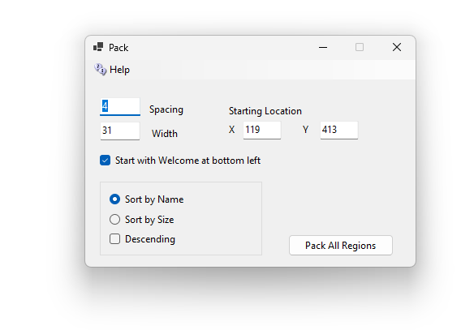
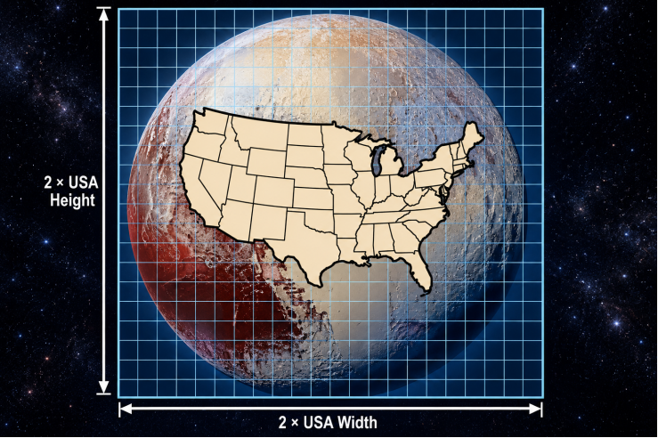

It is difficult to get your regions close to each other without touching. DreamGrid has a simple function to rearrange your grid into a grid of regions:

0 Spacing allows regions to touch. You can by default see 512 meters, so bigger numbers can cause the viewer to load distant regions, which slows frame rate.
Packing of a region only occurs if a region is enabled and not locked. You should disable any regions you do not want moved.
X and Y is the lower-left corner of the block. The next time you open this screen, X and Y show the corner of the last block you made.
Width is how many 256 x 256 squares fit across one row. A larger region uses more than one square. When a row is full, the next region starts a new row above it.
- Start with Welcome at bottom left: when ticked, your Welcome region goes first, in the lower-left corner. When not ticked, Welcome is sorted with the other regions.
- Sort by Name: regions go in name order. Capital letters do not matter.
- Sort by Size: small regions go first. Regions of the same size go in name order.
- Descending: turns the order around, Z to A, or large to small.
DreamGrid remembers these choices for next time. When Start with Welcome at bottom left is ticked, the Welcome region moves even if it is disabled.
Each region’s own map picture moves with it. The zoomed-out map pictures are deleted, and OpenSimulator draws them again the next time the regions start.
I capped X and Y at less than 16384. Robust rejects Y ≤ 16 (reserved for Hypergrid links). A region cannot move higher in Y than 16384.
There are map issues: Firestorm's world map doesn't ask for region info past 16,384. Tile pictures still show, but there are no region names, no hover text and no avatar dots. Clicking to teleport should still work!
At 65,535, Map messages store X/Y in 16 bits and wrap around.
At 8,388,607, Robust stores meters as a 32-bit integer and overflows.
Because I can do this, I set the limit 16,384. This is still pretty large and is also a limit in your grid’s Endless Land, Sea, Roads, and Cities.
· The entire dwarf planet Pluto: The total surface area of Pluto is roughly 17.65 million km², making your defined square almost an exact match to the exterior of that celestial body.
· The country of Russia: Russia is the largest nation on Earth, covering 17.10 million km². Our area is just slightly larger than the entire country.
· The continent of South America: The land area of South America spans about 17.84 million km², making your square nearly identical in total footprint.
· About half of the Moon: The total surface area of Earth's Moon is 37.94 million km². Our world square would cover about 46% of the Moon's entire surface!
